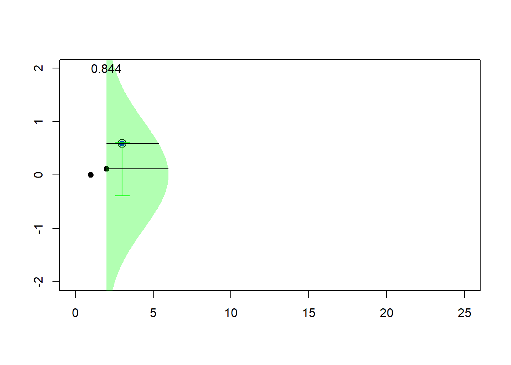

Chapter 8 Bayesian Inference
This section is being written and is not yet complete nor edited. It is here to give you a flavor of what will be in the final version.
In this section, you learn how to:
- Describe the Bayesian model as an alternative to the frequentist approach and summarize the five components of this modeling approach.
- Summarize posterior distributions of parameters and use these posterior distributions to predict new outcomes.
- Use conjugate distributions to determine posterior distributions of parameters.
8.0.1 Introduction to Bayesian Inference
Up to this point, our inferential methods have focused on the frequentist setting, in which samples are repeatedly drawn from a population. The vector of parameters \(\boldsymbol \theta\) is fixed yet unknown, whereas the outcomes \(X\) are realizations of random variables.
In contrast, under the BayesianA type of statistical inference in which the model parameters and the data are random variables. framework, we view both the model parameters and the data as random variables. We are uncertain about the parameters \(\boldsymbol \theta\) and use probability tools to reflect this uncertainty.
To get a sense of the Bayesian framework, begin by recalling Bayes’ rule,
\[ \Pr(parameters|data) = \frac{\Pr(data|parameters) \times \Pr(parameters)}{\Pr(data)}, \]
where
- \(\Pr(parameters)\) is the distribution of the parameters, known as the prior distribution.
- \(\Pr(data | parameters)\) is the sampling distribution. In a frequentist context, it is used for making inferences about the parameters and is known as the likelihood.
- \(\Pr(parameters | data)\) is the distribution of the parameters having observed the data, known as the posterior distribution.
- \(\Pr(data)\) is the marginal distribution of the data. It is generally obtained by integrating (or summing) the joint distribution of data and parameters over parameter values.
Why Bayes? There are several advantages of the Bayesian approach. First, we can describe the entire distribution of parameters conditional on the data. This allows us, for example, to provide probability statements regarding the likelihood of parameters. Second, the Bayesian approach provides a unified approach for estimating parameters. Some non-Bayesian methods, such as least squaresA technique for estimating parameters in linear regression. it is a standard approach in regression analysis to the approximate solution of overdetermined systems. in this technique, one determines the parameters that minimize the sum of squared differences between each observation and the corresponding linear combination of explanatory variables., require a separate approach to estimate variance components. In contrast, in Bayesian methods, all parameters can be treated in a similar fashion. This is convenient for explaining results to consumers of the data analysis. Third, this approach allows analysts to blend prior information known from other sources with the data in a coherent manner. This topic is developed in detail in the credibilityAn actuarial method of balancing an individual’s loss experience and the experience in the overall portfolio to improve ratemaking estimates. Chapter 11. Fourth, Bayesian analysis is particularly useful for forecasting future responses.
Gamma - Poisson Special Case. To develop intuition, we consider the gamma-Poisson case that holds a prominent position in actuarial applications. The idea is to consider a set of random variables \(X_1, \ldots, X_n\) where each \(X_i\) could represent the number of claims for the \(i\)th policyholder. Assume that claims of all policyholders follow the same Poisson so that \(X_i\) has a Poisson distribution with parameter \(\lambda\). This is analogous to the likelihood that we first saw in Chapter 3. In a non-Bayesian (or frequentist) context, the parameter \(\lambda\) is viewed as an unknown quantity that is not random (it is said to be “fixed”). In the Bayesian context, the unknown parameter \(\lambda\) is viewed as uncertain and is modeled as a random variable. In this special case, we use the gamma distribution to reflect this uncertainty, the prior distributionThe distribution of the parameters prior to observing data under the bayesian framework..
Think of the following two-stage sampling scheme to motivate our probabilistic set-up.
- In the first stage, the parameter \(\lambda\) is drawn from a gamma distribution.
- In the second stage, for that value of \(\lambda\), there are \(n\) draws from the same (identical) Poisson distribution that are independent, conditional on \(\lambda\).
From this simple set-up, some important conclusions emerge.
- The marginal, or unconditional, distribution of \(X_i\) is no longer Poisson. For this special case, it turns out to be a negative binomial distribution (see the following “Snippet of Theory”).
- The random variables \(X_1, \ldots, X_n\) are not independent. This is because they share the common random variable \(\lambda\).
- As in the frequentist context, the goal is to make statements about likely values of parameters such as \(\lambda\) given the observed data \(X_1, \ldots, X_n\). However, because now both the parameter and the data are random variables, we can use the language of conditional probability to make such statements. As we will see in Section 8.0.4, it turns out that the distribution of \(\lambda\) given the data \(X_1, \ldots, X_n\) is also gamma (with updated parameters), a result that simplifies the task of inferring likely values of the parameter \(\lambda\).
Show A Snippet of Theory
In this section, we use small examples that can be done by hand in order to focus on the foundations. For practical implementation, analysts rely heavily on simulation methods using modern computational methods such as Markov Chain Monte Carlo (MCMC) simulationThe class of numerical methods that use markov chains to generate draws from a posterior distribution.. We will get an exposure to simulation techniques in Chapter 7 but more intensive techniques such as MCMC requires yet more background. See Hartman (2016) for an introduction to computational Bayesian methods from an actuarial perspective.
8.0.2 Bayesian Model
With the intuition developed in the preceding Section 8.0.1, we now restate the Bayesian model with a bit more precision using mathematical notation. For simplicity, we assume both the outcomes and parameters are continuous random variables. In the examples, we sometimes ask the viewer to apply these same principles to discrete versions. Conceptually both the continuous and discrete cases are the same; mechanically, one replaces a pdf by a pmf and an integral by a sum.
To emphasize, under the Bayesian perspective, the model parameters and data are both viewed as random. Our uncertainty about the parameters of the underlying data generating process is reflected in the use of probability tools.
Prior Distribution. Specifically, think about parameters \(\boldsymbol \theta\) as a random vector and let \(\pi(\boldsymbol \theta)\) denote the corresponding mass or density function. This is knowledge that we have before outcomes are observed and is called the prior distribution. Typically, the prior distribution is a regular distribution and so integrates or sums to one, depending on whether \(\boldsymbol \theta\) is continuous or discrete. However, we may be very uncertain (or have no clue) about the distribution of \(\boldsymbol \theta\); the Bayesian machinery allows the following situation
\[ \int \pi(\theta) ~d\theta = \infty, \]
in which case \(\pi(\cdot)\) is called an improper priorA prior distribution in which the sum or integral of the distribution is not finite..
Model Distribution. The distribution of outcomes given an assumed value of \(\boldsymbol \theta\) is known as the model distribution and denoted as \(f(x | \boldsymbol \theta) = f_{X|\boldsymbol \theta} (x|\boldsymbol \theta )\). This is the usual frequentist mass or density function. This is simply the likelihood in the frequentist context and so it is also convenient to use this as a descriptor for the model distribution.
Joint Distribution. The distribution of outcomes and model parameters is a joint distribution of two random quantities. Its joint density function is denoted as \(f(x , \boldsymbol \theta) = f(x|\boldsymbol \theta )\pi(\boldsymbol \theta)\).
Marginal Outcome Distribution. The distribution of outcomes can be expressed as
\[ f(x) = \int f(x | \boldsymbol \theta)\pi(\boldsymbol \theta) ~d \boldsymbol \theta. \]
This is analogous to a frequentist mixture distribution. In the mixture distribution, we combine (or “mix”) different subpopulations. In the Bayesian context, the marginal distribution is a combination of different realizations of parameters (in some literatures, you can think about this as combining different “states of nature”).
Posterior Distribution of Parameters. After outcomes have been observed (hence the terminology “posterior”), one can use Bayes theorem to write the density function as
\[ \pi(\boldsymbol \theta | x) =\frac{f(x , \boldsymbol \theta)}{f(x)} =\frac{f(x|\boldsymbol \theta )\pi(\boldsymbol \theta)}{f(x)} . \]
The idea is to update your knowledge of the distribution of \(\boldsymbol \theta\) (\(\pi(\boldsymbol \theta)\)) with the data \(x\). Making statements about potential values of parameters is an important aspect of statistical inference.
8.0.3 Bayesian Inference
8.0.3.1 Summarizing the Posterior Distribution of Parameters
One way to summarize a distribution is to use a confidence intervalAnother term for interval estimate. unlike a point estimate, it gives a range of reliability for approximating a parameter of interest. type statement. To summarize the posterior distribution of parameters, the interval \([a,b]\) is said to be a \(100(1-\alpha)\%\) credibility intervalA summary of the posterior distribution of parameters under the bayesian framework. for \(\boldsymbol \theta\) if
\[ \Pr (a \le \theta \le b | \mathbf{x}) \ge 1- \alpha. \]
Particularly for insurance applications, this is also known as a credible interval to distinguish it from credibility theory introduced in Chapter 11.
For another approach to summarization, we can look to classical decision analysisBayesian decision theory is the study of an agent’s choices, which is informed by bayesian probability.. In this set-up, the loss function \(l(\hat{\theta}, \theta)\) determines the penalty paid for using the estimate \(\hat{\theta}\) instead of the true \(\theta\). The Bayes estimate is the value that minimizes the expected loss \(\mathrm{E~}[ l(\hat{\theta}, \theta)]\). Some important special cases include:
\[ {\small \begin{array}{cll} \hline \text{Loss function } l(\hat{\theta}, \theta) & \text{Descriptor} & \text{Bayes Estimate} \\ \hline (\hat{\theta}- \theta)^2 & \text{squared error loss} & \mathrm{E}(\theta|X) \\ |\hat{\theta}- \theta| & \text{absolute deviation loss} & \text{median of } \pi(\theta|x) \\ I(\hat{\theta} =\theta) & \text{zero-one loss (for discrete probabilities)} & \text{mode of } \pi(\theta|x) \\ \hline \end{array} } \]
Minimizing expected loss is a rigorous method for providing a single “best guess” about a likely value of a parameter, comparable to a frequentist estimator of the unknown (fixed) parameter.
Example 8.4.1. Actuarial Exam Question. You are given:
- In a portfolio of risks, each policyholder can have at most one claim per year.
- The probability of a claim for a policyholder during a year is \(q\).
- The prior density is \[\pi(q) = q^3/0.07, \ \ \ 0.6 < q < 0.8\]
A randomly selected policyholder has one claim in Year 1 and zero claims in Year 2. For this policyholder, calculate the posterior probability that \(0.7 < q < 0.8\).
Show Example Solution
Example 8.4.2. Actuarial Exam Question. You are given:
- The prior distribution of the parameter \(\Theta\) has probability density function: \[\pi(\theta) = \frac{1}{\theta^2}, \ \ 1 < \theta < \infty\]
- Given \(\Theta = \theta\), claim sizes follow a Pareto distribution with parameters \(\alpha=2\) and \(\theta\).
A claim of 3 is observed. Calculate the posterior probability that \(\Theta\) exceeds 2.
Show Example Solution
8.0.3.2 Bayesian Predictive Distribution
For another type of statistical inference, it is often of interest to “predict” the value of a random outcome that is yet to be observed. Specifically, for new data \(y\), the predictive distributionThe distribution of new data, conditional on a base set of data, under the bayesian framework. is \[ f(y|x) = \int f(y|\theta) \pi(\theta|x) d\theta . \]
It is also sometimes called a “posterior predictive” distribution as the distribution of the new data is conditional on a base set of data.
Using squared error loss for the loss function, the Bayesian prediction of \(Y\) is
\[ \begin{aligned} \mathrm{E}(Y|X) &= \int ~y f(y|X) dy = \int y \left(\int f(y|\theta) \pi(\theta|X) d\theta \right) dy \\ &= \int \left(\int y f(y|\theta) ~dy \right) \pi(\theta|X) ~d\theta \\ &= \int \mathrm{E}(Y|\theta) \pi(\theta|X) ~d\theta . \end{aligned} \] As noted earlier, for some situations the distribution of parameters is discrete, not continuous. Having a discrete set of possible parameters allows us to think of them as alternative “states of nature,” a helpful interpretation.
Example 8.4.3. Actuarial Exam Question. For a particular policy, the conditional probability of the annual number of claims given \(\Theta = \theta\), and the probability distribution of \(\Theta\) are as follows:
\[ {\small \begin{array}{l|ccc} \hline \text{Number of Claims} & 0 & 1 & 2 \\ \text{Probability} & 2\theta & \theta & 1-3\theta \\ \hline \end{array} } \]
\[ {\small \begin{array}{l|cc} \hline \theta & 0.05 & 0.30 \\ \text{Probability} & 0.80 & 0.20 \\ \hline \end{array} } \]
Two claims are observed in Year 1. Calculate the Bayesian prediction of the number of claims in Year 2.
Show Example Solution
Example 8.4.4. Actuarial Exam Question. You are given:
- Losses on a company’s insurance policies follow a Pareto distribution with probability density function: \[ f(x|\theta) = \frac{\theta}{(x+\theta)^2}, \ \ 0 < x < \infty \]
- For half of the company’s policies \(\theta=1\) , while for the other half \(\theta=3\).
For a randomly selected policy, losses in Year 1 were 5. Calculate the posterior probability that losses for this policy in Year 2 will exceed 8.
Show Example Solution
Example 8.4.5. Actuarial Exam Question. You are given:
- The probability that an insured will have at least one loss during any year is \(p\).
- The prior distribution for \(p\) is uniform on \([0, 0.5]\).
- An insured is observed for 8 years and has at least one loss every year.
Calculate the posterior probability that the insured will have at least one loss during Year 9.
Show Example Solution
Example 8.4.6. Actuarial Exam Question. You are given:
- Each risk has at most one claim each year. \[ {\small \begin{array}{ccc} \hline \text{Type of Risk} & \text{Prior Probability} & \text{Annual Claim Probability} \\ \hline \text{I} & 0.7 & 0.1 \\ \text{II} & 0.2 & 0.2 \\ \text{III} & 0.1 & 0.4 \\ \hline \end{array} } \]
One randomly chosen risk has three claims during Years 1-6. Calculate the posterior probability of a claim for this risk in Year 7.
Show Example Solution
8.0.4 Conjugate Distributions
In the Bayesian framework, the key to statistical inference is understanding the posterior distribution of the parameters. As described in Section 8.0.1, modern data analysis using Bayesian methods utilize computationally intensive techniques such as MCMCMarkov Chain Monte Carlo simulation. Another approach for computing posterior distributions are based on conjugate distributions. Although this approach is available only for a limited number of distributions, it has the appeal that it provides closed-form expressions for the distributions, allowing for easy interpretations of results.
To relate the prior and posterior distributions of the parameters, we have the relationship
\[ \begin{array}{ccc} \pi(\boldsymbol \theta | x) & = & \frac{f(x|\boldsymbol \theta )\pi(\boldsymbol \theta)}{f(x)} \\ & \propto & f(x|\boldsymbol \theta ) \pi(\boldsymbol \theta) \\ \text{Posterior} & \text{is proportional to} & \text{likelihood} \times \text{prior} . \end{array} \]
For conjugate distributions, the posterior and the prior belong to the same family of distributions. The following illustration looks at the gamma-Poisson special case, the most well-known in actuarial applications.
Special Case – Gamma-Poisson - Continued. Assume a Poisson(\(\lambda\)) model distribution and that \(\lambda\) follows a gamma(\(\alpha, \theta\)) prior distribution. Then, the posterior distribution of \(\lambda\) given the data follows a gamma distribution with new parameters \(\alpha_{post} = \sum_i x_i + \alpha\) and \(\theta_{post} = 1/(n + 1/\theta)\).
Show Special Case Details
Example 8.4.7. Actuarial Exam Question. You are given:
- The conditional distribution of the number of claims per policyholder is Poisson with mean \(\lambda\).
- The variable \(\lambda\) has a gamma distribution with parameters \(\alpha\) and \(\theta\).
- For policyholders with 1 claim in Year 1, the Bayes prediction for the number of claims in Year 2 is 0.15.
- For policyholders with an average of 2 claims per year in Year 1 and Year 2, the Bayes prediction for the number of claims in Year 3 is 0.20.
Calculate \(\theta\).
Show Example Solution
Closed-form expressions mean that results can be readily interpreted and easily computed; hence, conjugate distributions are useful in actuarial practice. Two other special cases used extensively are:
- The uncertainty of parameters is summarized using a beta distribution and the outcomes have a (conditional on the parameter) binomial distribution.
- The uncertainty about the mean of the normal distribution is summarized using a normal distribution and the outcomes are conditionally normally distributed.
Additional results on conjugate distributions are summarized in the Appendix Section 17.3.
Show Quiz Solution
8.1 Monte Carlo Markov Chain (MCMC)
This section is being written and is not yet complete nor edited. It is here to give you a flavor of what will be in the final version.
The idea of Monte Carlo techniques rely on the law of large numbers (that insures the convergence of the average towards the integral) and the central limit theorem (that is used to quantify uncertainty in the computations). Recall that if \((X_i)\) is an iid sequence of random variables with distribution \(F\), then
\[ \frac{1}{\sqrt{n}}\left(\sum_{i=1}^n h(X_i)-\int h(x)dF(x)\right)\overset{\mathcal{L}}{\rightarrow }\mathcal{N}(0,\sigma^2),\text{ as }n\rightarrow\infty , \] for some variance \(\sigma^2>0\). But actually, the ergodic theoremErgodic theory studies the behavior of a dynamical system when it is allowed to run for an extended time can be used to weaker the previous result, since it is not necessary to have independence of the variables. More precisely, if \((X_i)\) is a Markov ProcessA stochastic (time dependent) process that satisfies memorylessness, meaning future predictions of the process can be made solely based on its present state and not the historical path with invariant measureAny mathematical measure that is preserved by a function (the mean is an example) \(\mu\), under some additional technical assumptions, we can obtain that
\[ \frac{1}{\sqrt{n}}\left(\sum_{i=1}^n h(X_i)-\int h(x)d\mu(x)\right)\overset{\mathcal{L}}{\rightarrow }\mathcal{N}(0,\sigma_\star^2),\text{ as }n\rightarrow\infty. \] for some variance \(\sigma_\star^2>0\).
Hence, from this property, we can see that it is possible not necessarily to generate independent values from \(F\), but to generate a Markov process with invariant measure \(F\), and to consider means over the process (not necessarily independent).
Consider the case of a constrained Gaussian vector : we want to generate random pairs from a random vector \(\boldsymbol{X}\), but we are interested only in the case where the sum of the composantsComponent (smaller, self-contained part of larger entity) is large enough, which can be written \(\boldsymbol{X}^T\boldsymbol{1}> m\) for some real valued \(m\). Of course, it is possible to use the accept-reject algorithm, but we have seen that it might be quite inefficient. One can use Metropolis Hastings and Gibbs samplerA markov chain monte carlo (mcmc) method to obtain a sequence of random samples from a specified multivariate continuous probability distribution to generate a Markov process with such an invariant measure.
8.1.1 Metropolis Hastings
The algorithm is rather simple to generate from \(f\): we start with a feasible value \(x_1\). Then, at step \(t\), we need to specify a transition kernel : given \(x_t\), we need a conditional distribution for \(X_{t+1}\) given \(x_t\). The algorithm will work well if that conditional distribution can easily be simulated. Let \(\pi(\cdot|x_t)\) denote that probability.
Draw a potential value \(x_{t+1}^\star\), and \(u\), from a uniform distribution. Compute \[ R= \frac{f(x_{t+1}^\star)}{f(x_t)} \] and
- if \(u < r\), then set \(x_{t+1}=x_t^\star\)
- if \(u\leq r\), then set \(x_{t+1}=x_t\)
Here \(r\) is called the acceptance-ratio: we accept the new value with probability \(r\) (or actually the smallest between \(1\) and \(r\) since \(r\) can exceed \(1\)).
For instance, assume that \(f(\cdot|x_t)\) is uniform on \([x_t-\varepsilon,x_t+\varepsilon]\) for some \(\varepsilon>0\), and where \(f\) (our target distribution) is the \(\mathcal{N}(0,1)\). We will never draw from \(f\), but we will use it to compute our acceptance ratio at each step.
Show R Code
In the code above, vec contains values of \(\boldsymbol{x}=(x_1,x_2,\cdots)\), innov is the innovation.
Show R Code
for (k in 2:23) {pic_ani(k)}
Now, if we use more simulations, we get
vec <- metrop1(10000)
simx <- vec[1000:10000,1]
par(mfrow=c(1,4))
plot(simx,type="l")
hist(simx,probability = TRUE,col="light blue",border="white")
lines(u,dnorm(u),col="red")
qqnorm(simx)
acf(simx,lag=100,lwd=2,col="light blue")
8.1.2 Gibbs Sampler
Consider some vector \(\boldsymbol{X}=(X_1,\cdots,X_d)\) with independent components, \(X_i \sim \mathcal{E}(\lambda_i)\). We sample to sample from \(\boldsymbol{X}\) given \(\boldsymbol{X}^T\boldsymbol{1}>s\) for some threshold \(s>0\).
- with some starting point \(\boldsymbol{x}_0\),
- pick up (randomly) \(i\in\{1,\cdots,d\}\)
- \(X_i\) given \(X_i > s-\boldsymbol{x}_{(-i)}^T\boldsymbol{1}\) has an Exponential distribution \(\mathcal{E}(\lambda_i)\)
- draw \(Y\sim \mathcal{E}(\lambda_i)\) and set \(x_i=y +(s-\boldsymbol{x}_{(-i)}^T\boldsymbol{1})_+\) until \(\boldsymbol{x}_{(-i)}^T\boldsymbol{1}+x_i>s\)
Show R Code
plot(sim,xlim=c(1,11),ylim=c(0,4.3))
polygon(c(-1,-1,6),c(-1,6,-1),col="red",density=15,border=NA)
abline(5,-1,col="red")
The construction of the sequence (MCMCMarkov Chain Monte Carlo algorithms are iterative) can be visualized below
Show R Code
for (i in 2:100) {
pic_ani(i)
}